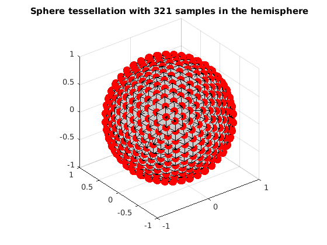
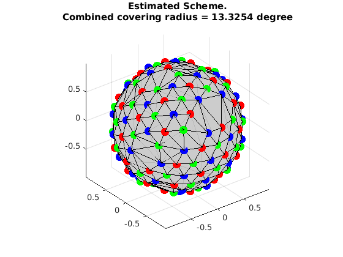

Uniformly select multiple subsets from a given set
This is a demo to uniformly separate multiple subsets from a given set by using Mixed Integer Linear Programming (MILP) It reproduces the experiment in the paper.
Reference:
1. "Single- and Multiple-Shell Uniform Sampling Schemes for Diffusion MRI Using Spherical Codes", Jian Cheng, Dinggang Shen, Pew-Thian Yap, Peter J. Basser, IEEE Transactions on Medical Imaging, 2017.
2. "Designing Single- and Multiple-Shell Sampling Schemes for Diffusion MRI Using Spherical Code", Jian Cheng, Dinggang Shen, Pew-Thian Yap, MICCAI 2014.
Copyright (c) 2013, Jian Cheng (jian.cheng.1983@gmail.com)
Contents
read sphere tessellation with 321 samples in the hemisphere
grad_t4 = ReadDirections([getenv('HOME'), '/.dmritool/Data/Tessellation/directions_t4.txt']); VisualizeMultiShellScheme(grad_t4); title(['Sphere tessellation with 321 samples in the hemisphere']);
extract 28x3 samples from grad_t4 using MILP
clear params grbParams params.numSamples = [28, 28, 28]; % sos constraint params.sos = 1; % set a lower bound, it can be 0 or covering radius from an existing scheme params.lbCost = [0.35,0.35,0.35,0.2]; params.w=0.5; % grb parameters % MIPFocus=1 seems better grbParams.MIPFocus = 1; % time limit grbParams.TimeLimit = 600; % print verbose output from gurobi grbParams.OutputFlag=true; % grbParams.OutputFlag=false; % It is possible to set a warm start if you have one % grbParams.start = gradInit; % run [grad,grb, indexMatrix] = OptimalSamplingMultiSubsetsFromSameSet(grad_t4, params,grbParams);
MIPFocus = 1
Academic license - for non-commercial use only
Optimize a model with 20163 rows, 967 columns and 70263 nonzeros
Model has 321 SOS constraints
Variable types: 4 continuous, 963 integer (963 binary)
Coefficient statistics:
Matrix range [1e+00, 1e+00]
Objective range [2e-01, 5e-01]
Bounds range [2e-01, 1e+00]
RHS range [3e+00, 3e+01]
Presolve removed 1600 rows and 0 columns
Presolve time: 0.13s
Presolved: 18563 rows, 967 columns, 64723 nonzeros
Variable types: 4 continuous, 963 integer (963 binary)
Presolved: 967 rows, 19530 columns, 65690 nonzeros
Presolve removed 967 rows and 19530 columns
Root relaxation: objective 4.019570e-01, 780 iterations, 0.06 seconds
Nodes | Current Node | Objective Bounds | Work
Expl Unexpl | Obj Depth IntInf | Incumbent BestBd Gap | It/Node Time
0 0 0.40196 0 164 - 0.40196 - - 0s
0 0 0.40196 0 179 - 0.40196 - - 0s
0 0 0.40196 0 184 - 0.40196 - - 0s
0 0 0.40196 0 187 - 0.40196 - - 1s
0 0 0.40196 0 191 - 0.40196 - - 1s
0 0 0.40196 0 236 - 0.40196 - - 2s
0 0 0.40196 0 232 - 0.40196 - - 2s
0 0 0.40196 0 270 - 0.40196 - - 3s
0 0 0.40196 0 233 - 0.40196 - - 3s
0 0 0.40196 0 166 - 0.40196 - - 5s
0 2 0.40196 0 166 - 0.40196 - - 29s
15 16 0.40196 5 185 - 0.40196 - 565 30s
432 434 0.40004 124 244 - 0.40196 - 113 35s
1136 1138 0.36149 351 172 - 0.40196 - 86.0 41s
1703 1706 0.35814 448 157 - 0.40196 - 74.1 45s
2692 2663 0.40196 204 167 - 0.40196 - 59.9 51s
3358 3300 0.38200 562 193 - 0.40196 - 54.0 55s
3564 3470 0.37676 370 164 - 0.40196 - 57.1 61s
3569 3474 0.36536 335 326 - 0.40196 - 57.0 65s
3572 3476 0.40151 234 328 - 0.40196 - 56.9 70s
H 3573 3302 0.2956821 0.40196 35.9% 56.9 83s
H 3573 3136 0.2956825 0.40196 35.9% 56.9 83s
3575 3141 0.40196 16 158 0.29568 0.40196 35.9% 64.2 86s
3603 3156 0.40196 21 219 0.29568 0.40196 35.9% 68.6 90s
3652 3191 0.40196 25 214 0.29568 0.40196 35.9% 73.0 97s
3723 3237 0.40196 28 206 0.29568 0.40196 35.9% 81.1 103s
H 3811 3140 0.3016700 0.40196 33.2% 92.6 108s
3890 3192 0.40196 34 197 0.30167 0.40196 33.2% 96.8 115s
H 3898 3048 0.3018425 0.40196 33.2% 99.3 115s
H 3920 2921 0.3021782 0.40196 33.0% 102 115s
H 3930 2782 0.3022095 0.40196 33.0% 102 115s
H 3967 2688 0.3064656 0.40196 31.2% 104 122s
4026 2729 0.40196 41 191 0.30647 0.40196 31.2% 109 128s
H 4065 2629 0.3074222 0.40196 30.8% 115 128s
4134 2680 0.40196 47 193 0.30742 0.40196 30.8% 116 136s
H 4187 2599 0.3093780 0.40196 29.9% 121 136s
4229 2628 0.40196 56 187 0.30938 0.40196 29.9% 123 145s
H 4266 2542 0.3094094 0.40196 29.9% 126 145s
4267 2555 0.40189 58 322 0.30941 0.40196 29.9% 126 159s
H 4362 2489 0.3094095 0.40196 29.9% 134 159s
4363 2498 0.39876 71 323 0.30941 0.40196 29.9% 134 179s
H 4443 2426 0.3109430 0.40196 29.3% 140 179s
4482 2491 0.39879 85 301 0.31094 0.40196 29.3% 142 205s
4586 2544 0.39846 93 311 0.31094 0.40196 29.3% 147 227s
4637 2586 0.39332 101 209 0.31094 0.40196 29.3% 150 238s
4857 2743 0.39296 114 261 0.31094 0.40196 29.3% 156 254s
H 5077 2747 0.3111455 0.40196 29.2% 159 254s
H 5187 2742 0.3129207 0.40196 28.5% 162 268s
5191 2743 0.38922 147 302 0.31292 0.40196 28.5% 163 284s
H 5257 2672 0.3137676 0.40196 28.1% 168 284s
5296 2710 0.37631 161 264 0.31377 0.40196 28.1% 168 309s
H 5324 2643 0.3148766 0.40196 27.7% 168 309s
5434 2712 0.37446 173 266 0.31488 0.40196 27.7% 168 323s
H 5497 2674 0.3158512 0.40196 27.3% 170 323s
5505 2676 0.34793 202 171 0.31585 0.40196 27.3% 171 343s
H 5524 2597 0.3158512 0.40196 27.3% 171 343s
H 5555 2547 0.3162834 0.40196 27.1% 174 343s
5576 2575 0.34793 212 164 0.31628 0.40196 27.1% 175 365s
H 5643 2525 0.3162835 0.40196 27.1% 178 365s
H 5668 2483 0.3163227 0.40196 27.1% 178 365s
5671 2504 0.32503 224 151 0.31632 0.40196 27.1% 178 381s
H 5737 2458 0.3163228 0.40196 27.1% 181 381s
5788 2520 0.40196 36 254 0.31632 0.40196 27.1% 183 397s
H 5799 2465 0.3166498 0.40196 26.9% 184 397s
5812 2462 0.40196 40 251 0.31665 0.40196 26.9% 184 411s
H 5838 2400 0.3166892 0.40196 26.9% 184 411s
5923 2466 0.40196 67 288 0.31669 0.40196 26.9% 185 430s
H 6010 2464 0.3173800 0.40196 26.6% 194 448s
H 6061 2449 0.3174509 0.40196 26.6% 193 448s
6077 2466 0.40196 178 166 0.31745 0.40196 26.6% 196 469s
6279 2595 0.40196 336 204 0.31745 0.40196 26.6% 199 492s
H 6377 2663 0.3174509 0.40196 26.6% 201 492s
H 6424 2702 0.3183940 0.40196 26.2% 206 492s
6425 2732 0.40037 412 299 0.31839 0.40196 26.2% 207 508s
H 6434 2738 0.3190413 0.40196 26.0% 208 508s
6447 2738 0.40142 418 310 0.31904 0.40196 26.0% 212 535s
H 6487 2772 0.3190413 0.40196 26.0% 214 535s
H 6510 2800 0.3217132 0.40196 24.9% 218 535s
H 6560 2854 0.3217134 0.40196 24.9% 218 555s
H 6583 2878 0.3217135 0.40196 24.9% 219 555s
H 6675 2969 0.3225686 0.40196 24.6% 225 579s
H 6700 2969 0.3225687 0.40196 24.6% 226 579s
6788 3097 0.37884 455 275 0.32257 0.40196 24.6% 228 600s
H 6814 3107 0.3225688 0.40196 24.6% 227 600s
Cutting planes:
Gomory: 3
Clique: 794
MIR: 42
StrongCG: 1
Flow cover: 50
Zero half: 7
Explored 6853 nodes (1588384 simplex iterations) in 600.02 seconds
Thread count was 8 (of 8 available processors)
Solution count 10: 0.322569 0.322569 0.322569 ... 0.317451
Time limit reached
Best objective 3.225688175350e-01, best bound 4.019570380823e-01, gap 24.6113%
visualize the result
VisualizeMultiShellScheme(grad{1},grad{2},grad{3});
title({'Estimated Scheme.', ['Combined covering radius = ', num2str(CoveringRadius([grad{1};grad{2};grad{3}])*180/pi), ' degree']});
